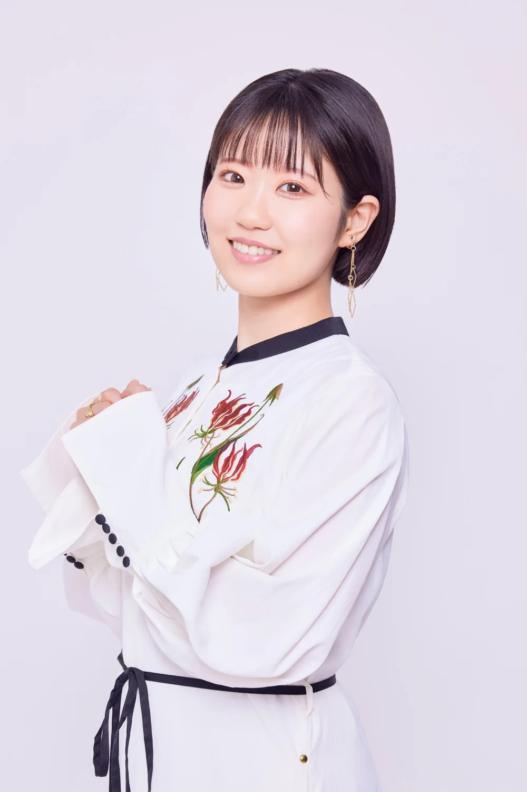

02 Kagane『ARE YOU THERE?』日本語ボイスを東山奈央さんに担当いただきました！Nao Toyama voices the Japanese version of 02 Kagane “ARE YOU THERE?”!

GameArtPRJ『CÔGEIMU』の新作、02 Kagane『ARE YOU THERE?』。 02 Kagane “ARE YOU THERE?” is the new work from GameArtPRJ “CÔGEIMU”.
今回、カガネの日本語ボイスを東山奈央さんに担当いただきました！ Kagane’s Japanese voice has been performed by Nao Toyama!

東山さんは以前から、声優としての表現力はもちろん、仕事や結果に真摯に向き合い続ける姿勢も含めて、個人的にとても尊敬し、憧れていた方です。
ただ、今回お願いした理由はそれだけではありません。
I have long admired and looked up to Toyama, not only for her expressiveness as a voice actor but also for the way she keeps facing her work and its results with sincerity.
But that is not the only reason we asked her.
カガネというキャラクターは、素材である「銅」の性質や歴史を、そのまま人の性格へ置き換えるところから設計しています。
曲がりやすく、さまざまな形へ加工できる銅のように、素直で柔軟。
さまざまな素材と結びつき、いろいろな色や性質へ変化していく銅のように、人見知りせず、誰とでも自然に仲良くなれる。
そして「金・銀・銅」と並べたとき、一番ではなかったとしても、それを卑屈に捉えることなく、あっけらかんと自分らしくいられる。
そんな、明るく、人懐っこく、素直で感情豊かな女の子としてカガネを考えています。
そのキャラクター像を声にしたとき、東山さんのお声の明るさや親しみやすさ、そしてさまざまな感情を豊かに表現されるお芝居が、とてもぴったりだと感じました。
Kagane’s character was designed by translating the nature and history of her material, copper, directly into a personality.
Like copper, which bends easily and can be worked into all kinds of shapes, she is honest and flexible.
Like copper, which bonds with many other materials and turns into all sorts of colours and qualities, she is never shy and gets along naturally with anyone.
And lined up as “gold, silver, bronze” (in Japanese, copper and bronze share one word), she may not come first, but she doesn’t let it bother her; she stays cheerfully herself.
That is how we see Kagane: a bright, friendly, honest girl full of feeling.
When we imagined that character as a voice, the brightness and warmth of Toyama’s voice, and acting that expresses so many emotions so richly, felt like a perfect fit.
「カガネを演じていただくなら、ぜひ東山さんにお願いしたい」
そう思い、今回お願いさせていただきました。
実際の収録でも、楽しそうにはしゃぐ声や、こちらに語りかけてくる声、ゲーム中のさまざまなリアクションまで、カガネのいろいろな表情をとても感情豊かに演じていただいています。
“If someone is going to play Kagane, we really want it to be Toyama.”
With that in mind, we asked her.
In the recording, too, she brought Kagane’s many sides to life with great feeling, from her happy, playful voice and the way she speaks to you, to all kinds of reactions during the game.
今回の『ARE YOU THERE?』は、一般的なゲームとは少し違った作品です。
鍛金によってつくられた銅の少女・カガネが実際に目の前に存在し、
“ARE YOU THERE?” is a little different from an ordinary game.
Kagane, a copper girl made by metal hammering (tankin), is actually there in front of you:
その瞳を覗き、
頬に触れ、
声を聞き、
一緒にゲームを遊ぶ。
you look into her eyes,
touch her cheeks,
hear her voice,
and play a game together.
そうした一連の体験そのものを作品にしています。
そのため、収録いただいたボイスを実際に作品へ組み込み、銅の少女像の中から東山さん演じるカガネの声が聞こえてきたときは、本当にカガネがそこにいるように感じられ、作品がもう一段完成に近づいたような感覚がありました。
That whole experience is the work itself.
So when we built the recorded lines into the work and heard Kagane’s voice, played by Toyama, coming from inside the copper figure, it truly felt as if Kagane were there, and the work felt one step closer to complete.
以前から憧れていた方に、自分たちがつくったキャラクターを実際に演じていただけたことを、本当に嬉しく思っています。
東山さんに演じていただいた、明るく感情豊かなカガネをぜひ楽しみにしていただけたら嬉しいです！
We are truly happy that someone we have long admired has played a character we created.
We hope you’ll look forward to the bright, expressive Kagane that Toyama has brought to life!
フランスでの初展示についてThe first exhibition, in France
『ARE YOU THERE?』は、2026年10月10日よりフランス・アルルで開催される「Anima Ludens」にて初展示を迎えます。
まずはフランスからのお披露目となりますが、もちろん日本の皆さんにも、実際にカガネの瞳を覗き、触れ、一緒に遊んでいただける機会をつくりたいと考えています。
日本国内での展示についても現在計画を進めていますので、こちらはもう少々お待ちください！
“ARE YOU THERE?” will be shown for the first time at “Anima Ludens”, opening on 10 October 2026 in Arles, France.
Its debut will be in France, but of course we also want to create chances for people in Japan to look into Kagane’s eyes, touch her and play with her.
We are also planning an exhibition in Japan, so please wait just a little longer!